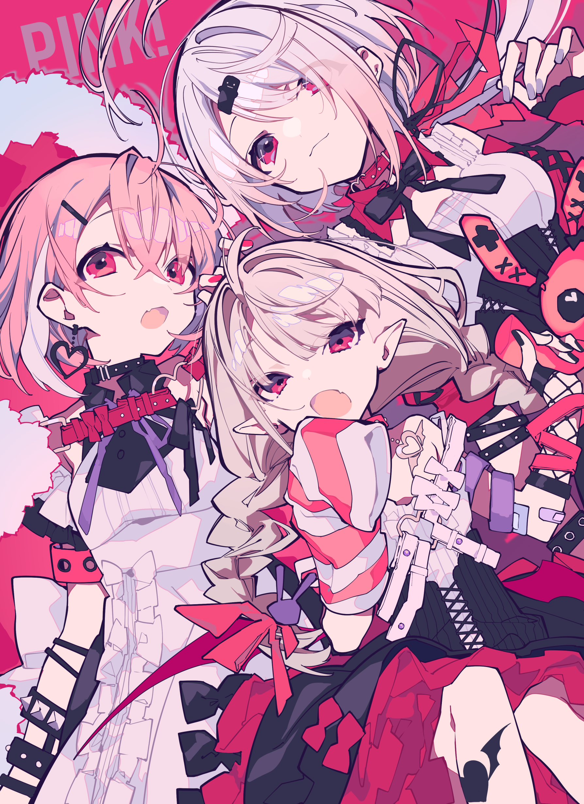

PINK!
PINK
!
PLAY THE POSTER
INTERACTIVE EDITION
✦
VOL. 01 / 03
Ⅱ
SWEET CHAOS / THREE OF A KIND
01
♡
02
✧
03
✚
TOO CUTE TO BE QUIET ✦ TOO CUTE TO BE QUIET ✦
HANDLE WITH ♡
♡
✦
✚ × ×
CHARM BOX
03 / 08
×
♡
✦
✚
⋈
◎
✳
↓ 重力
↗ 弹开
↺ 复位
弹性
78%
魔界ノりりむ
MAKAINO RIRIMU

ORIGINAL ↗
↙
×